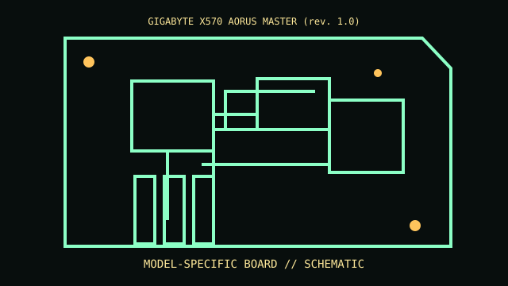

[ MODEL-SPECIFIC COMPONENT // MOTHERBOARDS ]
GIGABYTE X570 AORUS MASTER (rev. 1.0)
A sourced record of one model and its documented revision-specific behavior. Similar model numbers and later board spins are distinct products.

IDENTIFY THE PCB FIRST: Record silkscreen, assembly revision, product suffix and firmware string. Use revision-matched manuals and support lists; verify against the physical board.
Documented specifications
| Exact model / revision | GIGABYTE X570 AORUS MASTER (rev. 1.0) |
|---|---|
| Socket / processor | AM4 Ryzen processors listed for rev. 1.0 and required BIOS. |
| Chipset / architecture | AMD X570. |
| Memory | Four DDR4 DIMMs dual-channel; CPU/QVL determines capacity and speed. |
| Form factor | ATX. |
| I/O / expansion | Three M.2, SATA, PCIe 4, USB 3.2, 2.5GbE/Wi-Fi; lane sharing per manual. |
| Firmware / boot compatibility | GIGABYTE UEFI/Q-Flash; CPU support is revision-specific. |
Compatibility and revision pitfalls
Match PCB revision before Q-Flash. AM4 socket does not imply all Ryzen generations; CMOS reset can alter storage mode.
Before substitution, check exact CPU/SoC support, minimum BIOS/bootloader, memory population, power connectors and chassis requirements. Matching socket or connector alone does not prove compatibility.
Repair and preservation notes
Save BIOS/RAID settings; inspect CPU pins, thermal pads and chipset cooling; validate storage and DIMMs at default settings.
Record provenance, labels, firmware and test conditions. Photograph traces, jumpers and cable routing before repair or cleaning.
Sources & further reading
- GIGABYTE X570 AORUS MASTER rev. 1.0 supportRevision-specific manufacturer files.
- GIGABYTE X570 AORUS MASTER specsBoard model spec.
Manufacturer manuals, CPU lists and archived technical references form the basis of this record. Revision-specific documents take precedence over family summaries.